Nikmati dokumentasi pesona alam dan keindahan bawah laut Raja Ampat melalui kumpulan foto berikut.
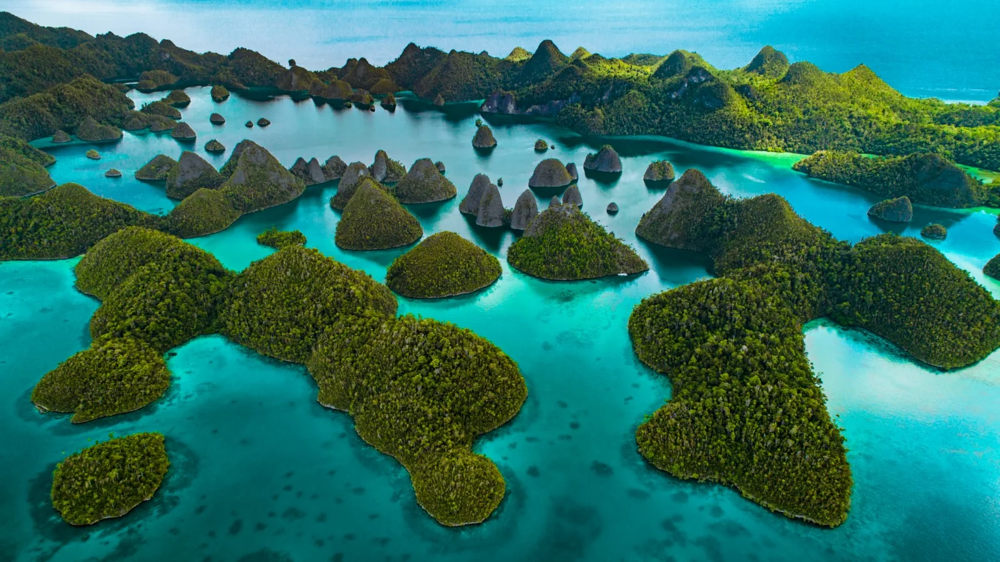
Pulau Wayag adalah ikon wisata utama dan gugusan pulau karst dan pantai berpasir putih di tengah laut, yang terletak di bagian utara Kabupaten Raja Ampat, Provinsi Papua Barat Daya.
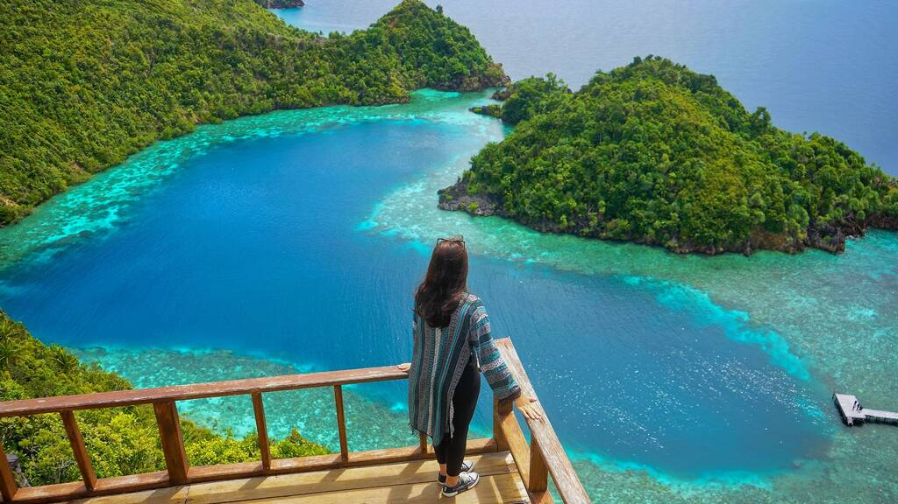
Pulau Misool adalah salah satu dari empat pulau utama Raja Ampat, terkenal dengan keindahan bawah laut, laguna berbentuk hati, tebing karst, dan spot snorkeling kelas dunia.
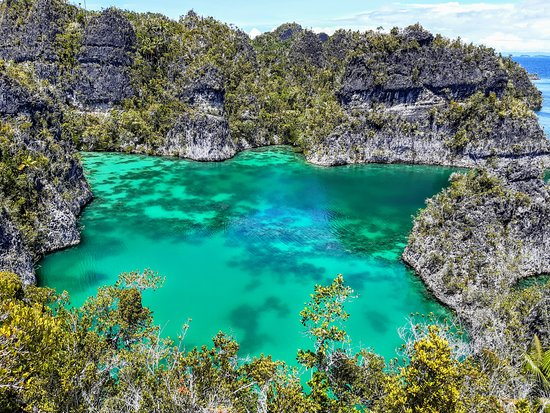
Berada di Pulau Pianemo, laguna ini memiliki bentuk menyerupai bintang jika dilihat dari atas bukit.
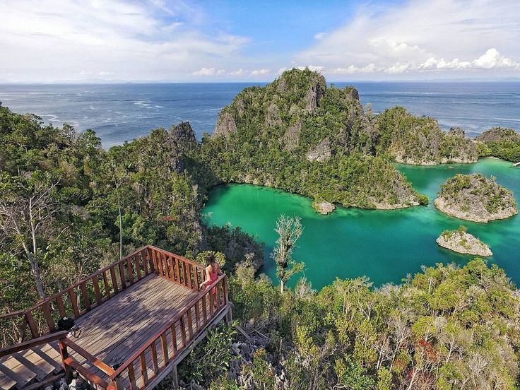
Bukit Pianemo adalah salah satu destinasi wisata ikonik yang sering dijuluki sebagai Wayag versi mini (Little Wayag).
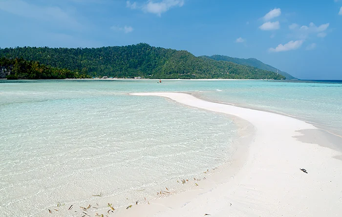
Pulau Mansuar memperlihatkan hamparan pasir putih yang timbul keika air laut surut, yang terletak di distrik Misool Selatan.
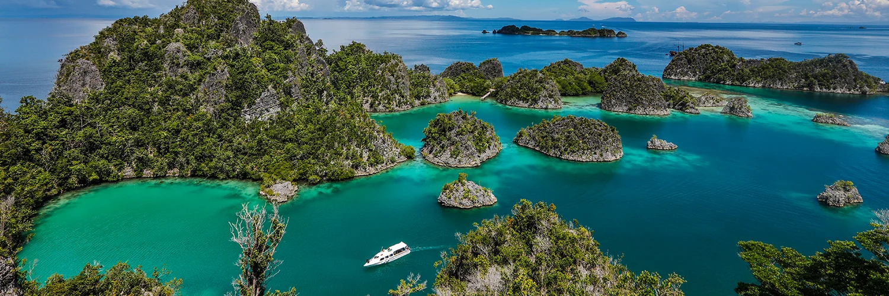
Pulau Waigeo adalah salah satu pulau terbesar di Raja Ampat yang memiliki beragam ekosistem laut. Perairannya menjadi lokasi di mana Pari Manta melakukan aktivitas pembersihan diri dengan bantuan terumbu karang dan ikan kecil.
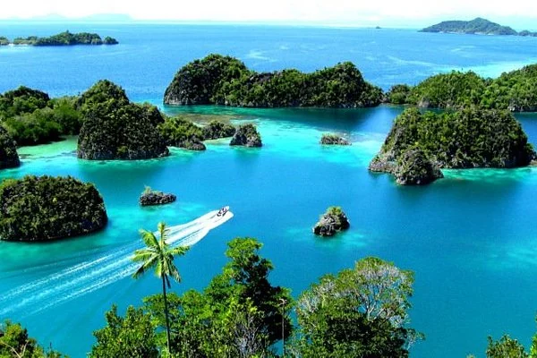
Pulau Batanta adalah salah satu dari empat pulau utama di Kepulauan Raja Ampat, Papua Barat Daya, yang terkenal karena kondisinya yang masih sangat alami dan belum terlalu ramai wisatawan.
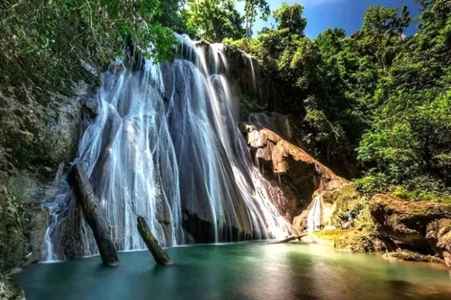
Air Terjun Batanta ketinggiannya yang mencapai 10 meter membuatnya terlihat begitu megah. Air terjun yang satu ini terlihat semakin indah dengan adanya bebatuan yang berada di sekitarnya.
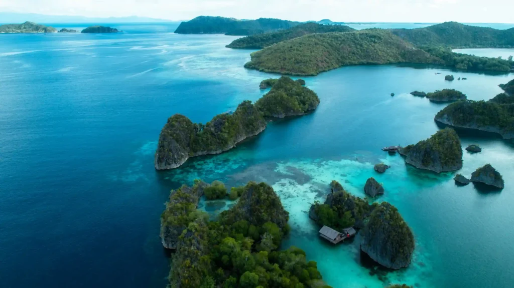
Pulau Salawati termasuk dalam 4 pulau besar di Raja Ampat. Pulau ini merupakan rumah bagi hutan hujan, ekosistem laut, dan budaya masyarakatnya.
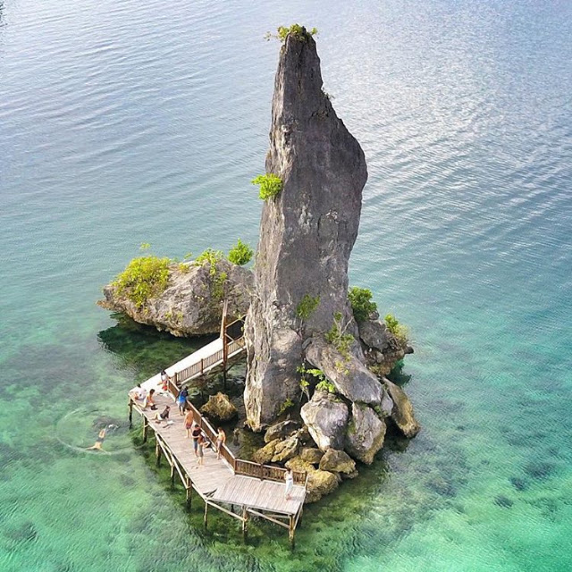
Teluk Kabui adalah destinasi wisata alam berupa labirin pulau-pulau karst (kapur) yang terletak di antara Pulau Waigeo dan Pulau Gam.
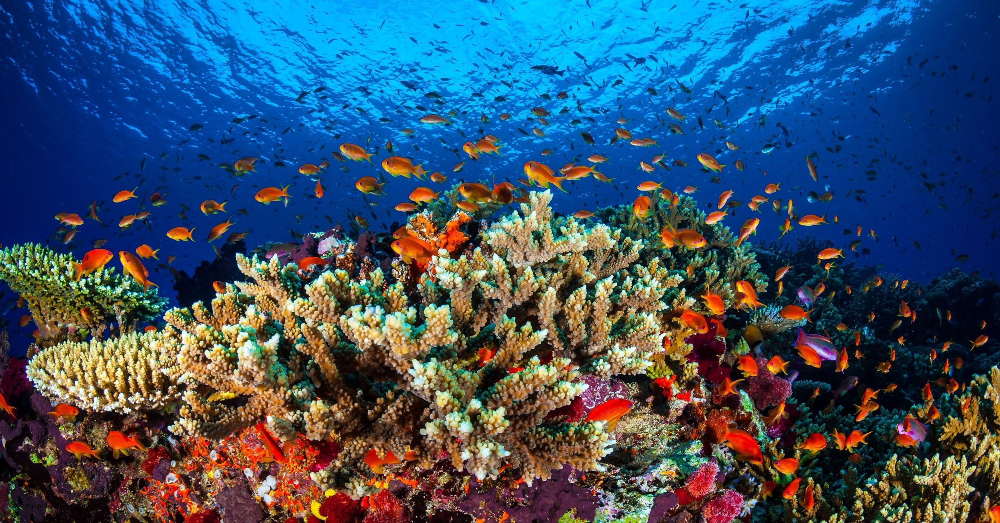
Perairan Raja Ampat (Papua Barat Daya) merupakan salah satu pusat keanekaragaman hayati laut terkaya di dunia karena berada di jantung Coral Triangle (Segitiga Terumbu Karang Dunia).
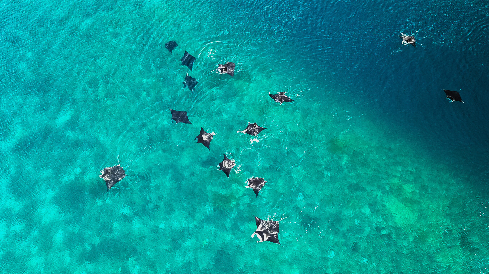
Ikan pari manta karang ( Mobula alfredi) adalah salah satu spesies laut terbesar dan paling ikonik.
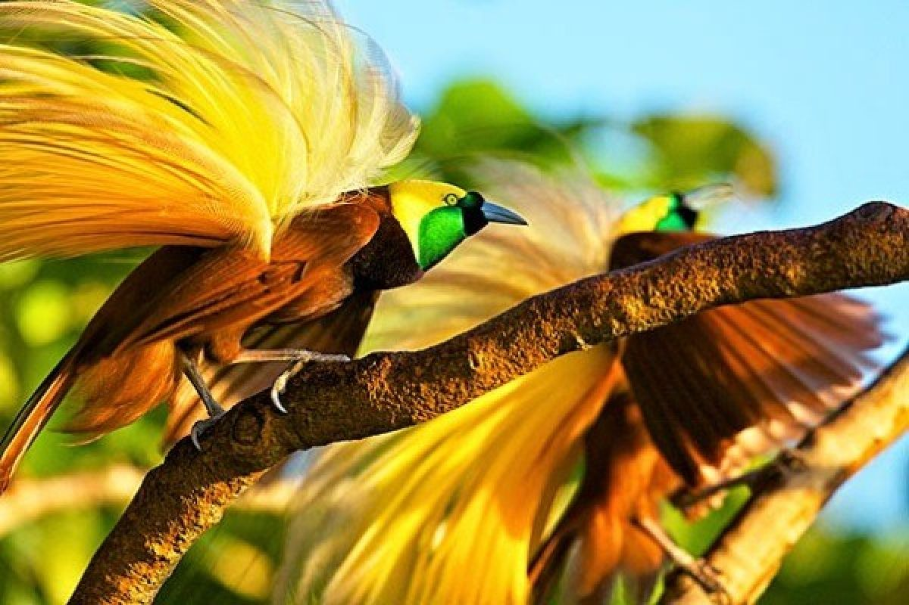
Burung cendrawasih merah merupakan salah satu spesies burung endemik yang hanya ditemukan di kawasan tertentu di Indonesia. Keindahan bulunya dan keunikan perilakunya menjadikan Paradisaea rubra sebagai ikon alam Papua, terutama di Raja Ampat.
Kesenian suling tambur adalah seni musik ansambel tradisional khas Papua yang memadukan alunan suling dan pukulan tambur, sering disebut sebagai "marching band" versi lokal Papua.
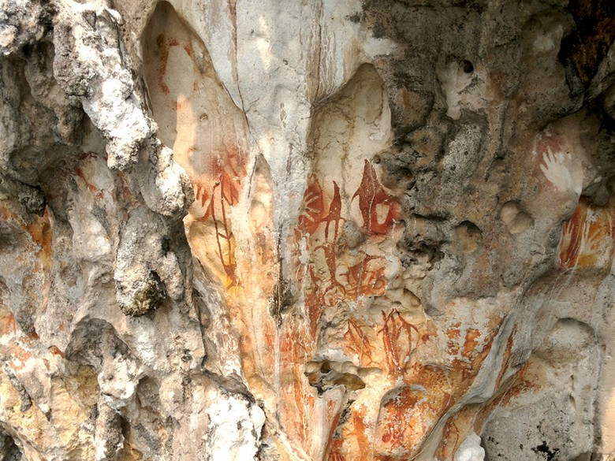
Lukisan Cadas merupakan warisan prasejarah yang terletak di Karst Sunmalelen, Misool, yang diperkirakan berusia 4.000 tahun.